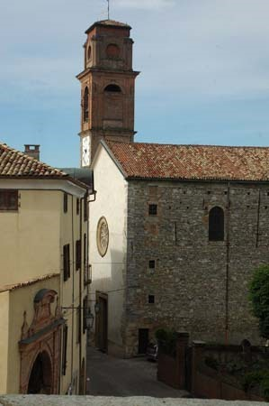
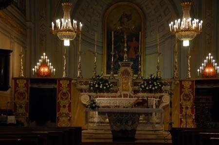
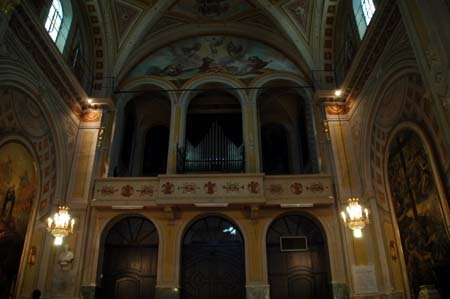
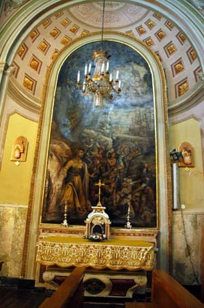
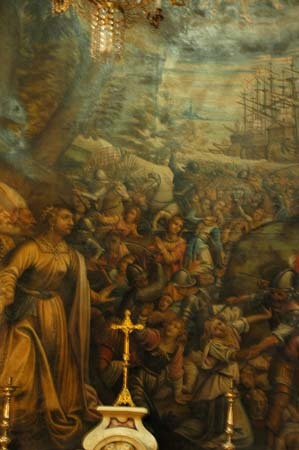
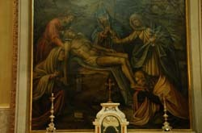
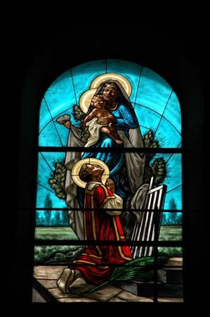

Santa Maria
della Pace
La parrocchiale nel cuore di Montiglio.
Una chiesa nata nella seconda metà del Cinquecento e trasformata nei secoli, tra vicende storiche, opere d'arte e una ricca decorazione pittorica.
Scopri la sua storiaContenuti rielaborati dalla pagina istituzionale del Comune

Le origini
Una nuova chiesa
per il paese.
L'attuale parrocchiale di Santa Maria della Pace sorse nella seconda metà del XVI secolo.
Nel 1584 il cantiere procedeva lentamente. Il visitatore apostolico Carlo di Montiglio sollecitò il completamento dell'edificio, necessario per amministrare i sacramenti a una comunità numerosa.
Nel 1614 la chiesa era in funzione. Soltanto quattro anni dopo, nel 1618, fu però saccheggiata dall'esercito piemontese.
Quattro secoli di storia
Trasformazioni
e nuove opere.
Interventi successivi completarono gli spazi, gli arredi e la decorazione della chiesa.
1656
La balaustra
Viene costruita la balaustra.
1696–1740
La sacrestia
La sacrestia viene realizzata nel 1696 e ristrutturata o rifatta nel 1740.
1770–1774
Il tetto e le campane
Nel 1770 viene rialzato il tetto; quattro anni più tardi vengono fuse le campane.
1784–1786
Il pulpito e l'organo
Nel 1784 viene costruito il pulpito. Nel 1786 viene commissionato un nuovo organo alla ditta Lingiardi di Pavia.
1839–1840
Gli affreschi
Pietro Ivaldi, detto “il Muto”, e il fratello affrescano la chiesa.
Arte e memoria
Un interno
da osservare.
Arredi, organo e pitture raccontano le diverse fasi della vita della parrocchiale.
Il primo organo ricordato dalle fonti proveniva dal convento della Maddalena ed era stato acquistato per seicento franchi. Il pulpito, costruito nel 1784, fu in seguito rifatto vicino al pilastro sul lato del Vangelo.
La campagna pittorica ottocentesca di Pietro Ivaldi e del fratello caratterizza ancora oggi l'interno. Anche l'archivio testimonia una lunga continuità: la documentazione inizia con il Concilio di Trento e i libri dello stato civile ecclesiastico risalgono al 1572.
La chiesa nelle immagini
Spazi, dipinti
e dettagli.
Una selezione della galleria fotografica pubblicata dal Comune di Montiglio Monferrato.





